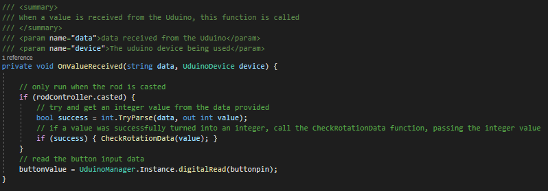
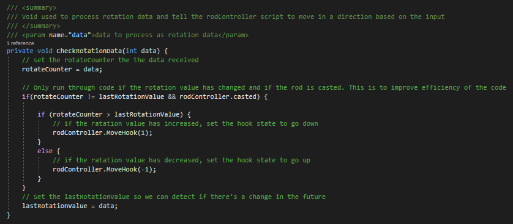
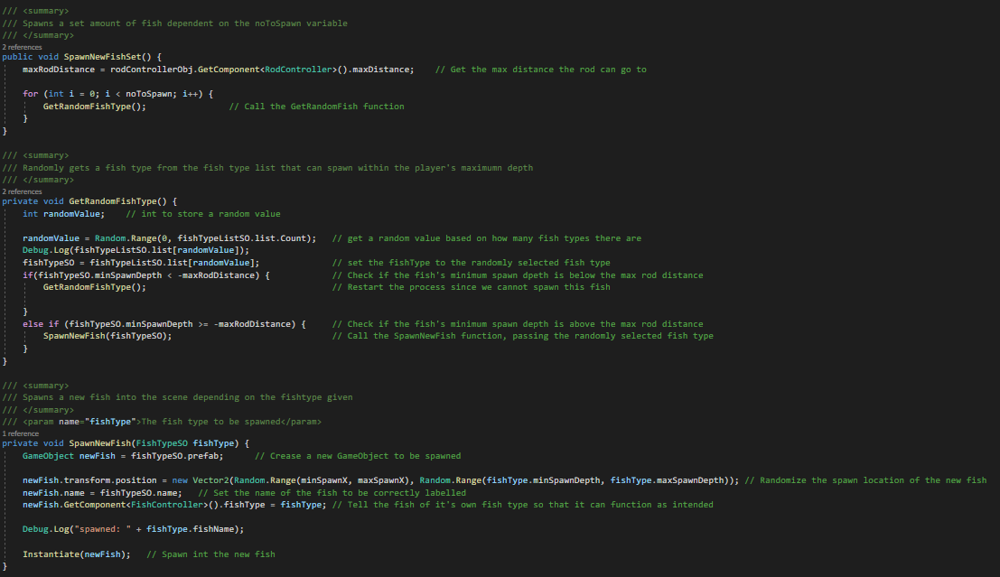
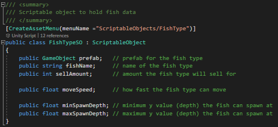
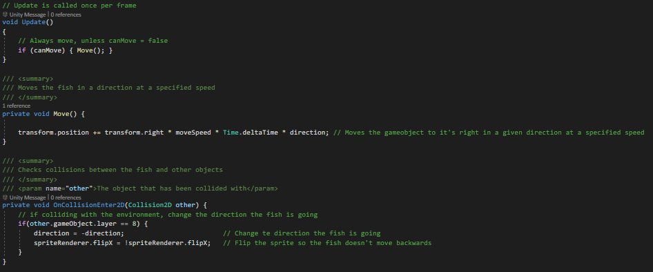

Overview
This proejct was my first year solo project, in which we were tasked with creating a custom controller using an Arduino, alongside a game that could be played using it. I decided to create a fishing game, where the player could cast the hook by putting the tip into water, and use the reel to move the hook up and down to play the game and navigate it's menus. The game functioned through having different fish types spawning at different depths, and a day/night cycle that enabled the player to sell what they had caught and uprade their fishing rod in preparation for the next day.
I developed numerous systems for this game, for instance a system that made use of scriptable objects for easy implementation of different fish types, an upgrade system for the fishing rod, integrating the custom controller for use in the game, and more.
Example Systems + Scripts
Below are the main functions of the rod controller, handling moving the hook and resetting it to catch the fish.
The ResetHook method simply checks if the hook is high enough to be uncast, in which if it is, the hook will be reset to it's initial
position. However, if not above the threshold, the hook wil simply be moved upwards until it reaches the height to be uncast.
Whereas the MoveHook method takes a given direction and moves the hook into this direction, ensuring to keep the hook object within bounds.
Controller Value Reciever:
Below is the script which read values recieved from the Arduino, and called different parts of the script depending on what data has been recieved. For example, if the input was from the rotary encoder, it would take this given value and pass it through the CheckRotationData method so it can be processed into moving the hook.
Below is the CheckRotationData method mentioned before. It takes the data recieved as an integer, checks whether it has changed, and applies a movement to the hook in the appropriate direction. Making sure to set the lastRotationValue value to this new value once.
This is the script responsible for spawning in new fish each game day. It functions through having the SpawnNewFishSet method called, which then spawns in a given amount of fish, ensuring to only spawn in fish that the player can actually catch.
The main method of this script is the GetRandomFishType, which gets a random fish type from the list of different fish, looping until an appropriate fish has been selected. Once this fish is spawned in, it is passed through to the SpawnNewFish method, which takes the fishtype and instantiates a new gameobject of this fish type in a random location based on the fish being spawned.
Below is the scriptable object for a fish type, having all the information it needs for the game to function as intended. Having these kept as scriptable objects meant I could easily implement and add new fish to the game without much effort. The different types of fish were then kept in a list of FishTypeSOs so they could be loaded and refereced in the game's other systems.
The fish also needed to move across the screen, since idle fish wouldn't make for much interaction, so I simply made them move left to right, ensuring to flip the sprite once they reached the edge of the screen.
What I learnt from this project
I learnt many things from this project, however the main skills I developed and improved were: general coding prowess, greater adaptability to new systems and coding languages, use of event systems, and understanding the player-controller relationship.
Firstly, throughout the creation of this project, I had to research and better understand coding architecture and how to make my scripts more efficient, readable, and maintainable so that I could develop my game much more smoothly. I ensured to keep my code clean, commented and readable throughout development so that I could better understand how to maintain and develop different systems all through the production of a product. A part of this was using event systems to ensure these systems could communicate with one-another easily and effectively, something I had never used before this project. Since using events, I have been able to create much more elegent solutions with greater efficiency and effectiveness. Developing this software I also had to make use of Uduino and c++, two things I had not touched before this assignment. I was able to quickly adapt and figure out how to make use of both of these to produce the results I wanted.
I have also gained greater knowledge into the relationship between the player and the way they control the software. Through creating my own controller, I had to think about how the user was going to use this and any accessibility issues they may have when using it. This has given me a grasp as to how to better integrate a controller into a system, and how people with different needs may be able to still access this software.